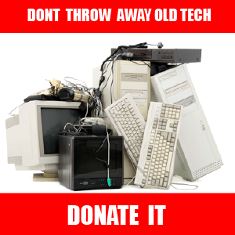

"We need technology in every classroom and in every student and teacher's hand, because it is the pen and paper of our time, and it is the lens through which we experience much of our world." -David Warlick
Our NGO in Gurgaon, Dream Girl Foundation has recently launched their campaign 'E-Learning'. The aim behind this campaign is to provide digital education for the kids at our centers. Digital education has proved to Old Tech Donationbe more beneficial in promoting all round personality of students. It promotes learning beyond the black and white text of the books. At our NGO we have taken this initiative to educate the children in a digital environment. In order to facilitate the same we will be requiringLaptops/PC's/Computers to kickstart the program. Therefore we invite our humble donors and IT companies to come forward and contribute towards digital learning for the poor children.
One of the greatest reasons to donate to charity is to help the less fortunate. If you have been blessed, making a decision to donate to charity can help you give a little back. With help of our campaign you can produces a meaningful impact on the quality of life for many throughout the world. Make a difference by providing a refurbished computer towards an educational, needy individual, or future learning program.
Not only this but our campaign is also aimed to solve the E-waste problem thus solving both educational and environmental problem. According to the global reports, World's E-Waste has grown by 33% in 2017. Some 20 to 50 million metric tonnes of e-waste are generated worldwide every year, comprising more than 5% of all municipal solid waste. When millions of computers purchased around the world every year become obsolete they leave behind lead, cadmium, mercury and other hazardous wastes. As a baby step to address the magnaDonate Used Electronicsnimous global issue of e-waste, Dream Girl Foundation has implemented a initiative to invite donors and IT companies to donate used computers to our centers. .In India, millions of computers and laptops are dumped every day, informal processing of electronic waste may cause serious health and pollution problems, as these countries have limited regulatory oversight of e-waste processing. Your one humble step in this direction can help our NGO in Gurgaon to get access to technology and scale up the operations in areas of education and health infrastructure in the backward areas of Gurgaon.
Our NGO wants to create a Hope or better say an "E-HOPE for Computer Education" which aims to equip the children at our centers with basic technical knowledge and the latest technology and computer systems.
By donating your old computers you will be making an important step towards bridging the digital divide. In today's world every person and organisation have to keep pace with the technological changes. Thus, throwing away your old desktops and laptops in favour of the latest model is the in-thing. But there are many children in India like the ones residing in the backwards areas of Gurgaon who have not even seen a computer. To help such children with digital education , Dream Girl Foundation, our NGO in Gurgaon have started this campaign to help promote E-Learning.
In order to make this campaign successful and promote growth and learning of the poor children who have big dreams, we look forward to hearing from you.